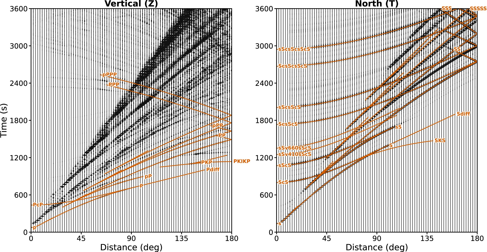

Paper workflows / ex4
EX4 · Acceleration record section
Writes a multi-receiver time series as a record-section table, then plots the vertical and north components with reference travel-time markers.


Configuration
Uses data/params/ex4.txt, a 0.1–50 mHz band, a 0.2-second sampling interval and an acceleration output. The source-controlled arrival-time table is plotting/outputs/travel_times.txt.
Comparison inputs
The plot overlays the repository travel-time picks. This is not a waveform comparison against a second solver.
Executable and outputs
cmake -S . -B build/release -DDSPECM1D_BUILD_BENCHMARKS=ON
cmake --build build/release --target ex4 --parallel 2
OMP_NUM_THREADS=2 ./build/release/bin/ex4The executable writes ex4.out to build/release/output/. It contains one row per time sample with three components per receiver; a fresh build generates it when the executable runs.
Plot command
Run from the repository root after producing the waveform output:
DSPECM1D_BUILD_DIR=build/release python3 plotting/functions/ex4.pyScope and limits
This is published Figure 5, the 91-receiver record-section case. The paper uses frequencies up to 500 mHz, degree 7500 and a one-hour record. The current ex4 input instead uses 50 mHz, degree 750 and a 120-minute record, so its output is not a reproduction of the published figure.